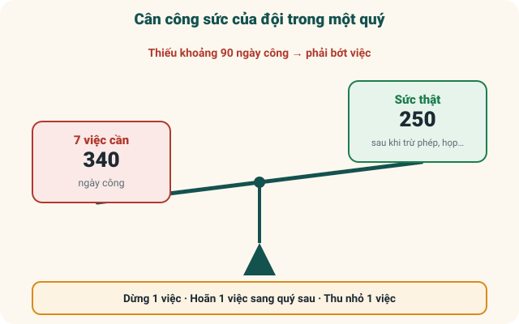

K5 · Lập kế hoạch và giữ cam kết công việc › Bậc 5 Dẫn dắt
Ôn tập: phân bổ người theo ưu tiên của đội
Bài này làm Tờ 8: Bảng phân bổ quý và Danh sách không làm. Mẫu in. Bài dùng lại Tờ 2 (mục tiêu đội) và Một trang dự án của khóa N4.
1. Mục tiêu
- Lập Bảng phân bổ quý: so công sức cần cho từng việc với sức thật của đội.
- Viết Danh sách không làm: việc dừng, việc hoãn, và báo cấp trên kèm lý do.
2. Khởi động truy xuất
Câu hỏi trộn từ cả khóa. Trả lời không nhìn gì, rồi mới mở đáp án.
- Ba cột của Bản chuyển vai là gì?
- Vì sao Mục tiêu đội có phần "Không làm"?
- Bốn mức tự quyết khi giao việc là gì?
- Bốn bước câu hỏi của buổi 1-1 coaching là gì?
- Vì sao mở đầu đối thoại khó bằng sự kiện, không bằng nhận xét?
- Việc không tên là gì? Chia thế nào cho công bằng?
- Năm dòng của Quy tắc dùng AI là gì?
Đáp án
- Buông, giữ, mới.
- Để đội biết dồn sức vào đâu và dừng gì khi quá tải.
- Làm theo hướng dẫn; đề xuất rồi chờ duyệt; tự làm rồi báo; tự quyết hoàn toàn.
- Mục tiêu, thực tế, lựa chọn, bước tiếp.
- Sự kiện kiểm tra được. Nhận xét làm người nghe phòng thủ.
- Việc chung không ai được giao chính thức, như ghi biên bản. Luân phiên theo lịch.
- Công cụ, dữ liệu, kiểm tra, ghi rõ, trách nhiệm.
Xem lại: Bản đồ khóa N5.
3. Giải thích
Đội nào cũng có nhiều việc hơn sức làm. Nếu quản lý nhận hết, đội sẽ làm mọi việc một nửa. Phân bổ nguồn lực là chọn đặt người và thời gian vào đâu.
Bảng phân bổ quý có 5 bước.
- Liệt kê việc: mọi việc đang chạy và sắp đến, cả việc thường ngày.
- Gắn với mục tiêu: mỗi việc góp vào kết quả nào trong Tờ 2. Việc không gắn với kết quả nào là ứng viên để dừng.
- Ước công sức: mỗi việc cần bao nhiêu ngày công.
- Tính sức thật: số người nhân với số ngày làm việc, trừ nghỉ phép, họp, đào tạo, việc phát sinh. Đừng tính mỗi người làm đủ 100% thời gian.
- So và chọn: nếu việc cần nhiều hơn sức thật, phải bớt việc, không phải bắt đội làm thêm giờ mãi.

Danh sách không làm có ba loại.
Danh sách không làm
- DừngViệc không gắn với kết quả nào.
- HoãnViệc có ích nhưng chưa gấp, ghi quý sẽ làm.
- Thu nhỏLàm phần quan trọng nhất, bỏ phần còn lại.
Báo cấp trên trước khi dừng. Gửi bảng phân bổ và danh sách không làm. Nói rõ: nếu muốn thêm việc, cần bớt việc nào, hoặc thêm người. Để cấp trên chọn, đừng tự bỏ việc trong im lặng.
Phân người theo năng lực và mục tiêu phát triển. Việc khó, quan trọng, nên có người chính và một người học kèm. Như vậy đội không phụ thuộc vào một người.
4. Ví dụ tại nơi làm việc Việt Nam
Tình huống giả định. Anh Huy là trưởng phòng đảm bảo chất lượng 5 người ở một nhà máy thực phẩm tại Long An. Quý 1 có 7 việc, cần khoảng 340 ngày công.
Anh tính sức thật. 5 người làm khoảng 62 ngày mỗi người trong quý. Trừ nghỉ phép, họp, đào tạo, việc phát sinh, còn khoảng 250 ngày công. Thiếu khoảng 90 ngày công.
Anh đối chiếu với Tờ 2 của phòng. Dừng: báo cáo tuần bằng giấy, vì đã có bảng số liệu trực tuyến. Hoãn: đánh giá lại nhà cung cấp bao bì sang quý 2. Thu nhỏ: cập nhật quy trình, chỉ làm 5 quy trình có nhiều lỗi nhất.
Anh gửi bảng cho giám đốc nhà máy. Anh ghi rõ: nếu cần đánh giá nhà cung cấp ngay quý 1, cần thuê ngoài hoặc dời việc khác. Giám đốc đồng ý hoãn.
Việc chuẩn bị đánh giá của khách hàng do chị Linh làm chính, Tú học kèm.
Vì sao cách này tốt: con số sức thật có trừ thời gian không làm việc chính. Việc dừng, hoãn gắn với mục tiêu. Cấp trên được chọn trước khi việc bị bỏ.
5. Thực hành
Tình huống giả định. Bạn là trưởng nhóm 4 người ở một trung tâm ngoại ngữ tại Huế, lo tuyển sinh và chăm sóc học viên. Quý tới có: tuyển sinh hè, khảo sát học viên, làm lại trang web, hội thảo phụ huynh, báo cáo tháng. Nhóm ước cần 260 ngày công, sức thật khoảng 190.
Viết Danh sách không làm. Viết hai câu báo cấp trên.
Gợi ý 1
Việc nào gắn trực tiếp với mục tiêu tuyển sinh của quý? Việc nào có thể làm nhỏ lại?
Gợi ý 2
Câu báo cấp trên nên có: con số thiếu, đề xuất, và lựa chọn để cấp trên quyết.
Lời giải mẫu
- Giữ: tuyển sinh hè, báo cáo tháng.
- Thu nhỏ: hội thảo phụ huynh, làm một buổi thay vì ba; khảo sát học viên, dùng 5 câu hỏi trực tuyến.
- Hoãn: làm lại trang web sang quý sau; quý này chỉ sửa trang đăng ký học.
- Báo cấp trên: "Quý tới nhóm cần khoảng 260 ngày công nhưng chỉ có khoảng 190. Em đề xuất hoãn làm lại trang web và thu nhỏ hội thảo; nếu cần giữ cả hai, nhóm cần thêm một cộng tác viên."
(Số liệu là giả định.)
6. Tự kiểm tra
Chọn đáp án. Mỗi lựa chọn đều có giải thích.
Câu 1. Đội 4 người, mỗi người 60 ngày làm việc trong quý. Sức thật của đội nên tính thế nào?
-
Chưa đúng. Con số này coi như ai cũng làm việc chính 100% thời gian. Thực tế còn nghỉ phép, họp, đào tạo, việc phát sinh.
-
Đúng. Đúng. Sức thật là thời gian còn lại cho việc chính. Tính dư sẽ khiến đội luôn trễ.
-
Chưa đúng. Kế hoạch dựa vào làm thêm giờ kéo dài sẽ làm đội kiệt sức.
Câu 2. Một việc đang chạy không gắn với kết quả nào trong mục tiêu đội. Bạn làm gì?
-
Đúng. Đúng. Việc không gắn mục tiêu là ứng viên để dừng. Báo trước để cấp trên biết và có thể phản đối.
-
Chưa đúng. Dừng trong im lặng có thể làm người cần việc đó bất ngờ, và làm mất lòng tin.
-
Chưa đúng. Đã làm lâu không phải lý do để tiếp tục. Thời gian đó có thể dành cho việc quan trọng hơn.
Câu 3. (Ôn Bài 3) Bạn giao một nhân viên mới chọn nhà cung cấp, hợp đồng lớn. Mức tự quyết nào hợp lý?
-
Chưa đúng. Việc tốn nhiều tiền và người nhận còn mới. Sai thì khó sửa.
-
Đúng. Đúng. Người mới vẫn được tự tìm hiểu và so sánh, quyết định tốn tiền thì có người duyệt.
-
Chưa đúng. Báo sau thì đã ký hợp đồng. Mức này hợp với việc quen, rủi ro thấp.
Câu 4. (Ôn Bài 4 và 5) Nhân viên kể trong 1-1: đồng nghiệp gửi tin nhắn đe dọa. Bạn nên làm gì?
-
Chưa đúng. Đe dọa thuộc vùng không hòa giải, cần quy trình. Đây không phải lúc coaching.
-
Đúng. Đúng. Việc liên quan an toàn thì chỉ dẫn và xử lý theo quy trình, có người có thẩm quyền.
-
Chưa đúng. Hòa giải không dùng cho đe dọa, quấy rối. Người bị ảnh hưởng có thể gặp thêm nguy hiểm.
Câu 5. (Ôn Bài 7) Phòng bắt đầu dùng AI. Lo ngại lớn nhất của đội là bị cắt việc. Bạn nên làm gì?
-
Chưa đúng. Lo ngại không được nghe sẽ thành chống đối ngầm.
-
Đúng. Đúng. Trả lời công khai, trung thực giúp đội tin. Chỉ hứa điều bạn biết chắc.
-
Chưa đúng. Hứa điều chưa chắc sẽ làm mất lòng tin nếu sau này khác đi.
7. Phản tư
- Trong 8 tờ của Sổ tay quản lý, tờ nào bạn đã dùng với đội thật? Tờ nào chưa?
- Việc nào đội bạn đang làm mà không gắn với kết quả nào?
8. Áp dụng thật
Trong 7 ngày tới, làm Tờ 8 cho quý tới và gửi cấp trên. Ôn lại khóa sau 7 ngày và sau 30 ngày bằng phần Tự kiểm tra của từng bài. Sau 3 tháng, gửi lại ba câu phản hồi ở Bài 1 và so kết quả.
9. Siêu dữ liệu
| skill | K5 · Lập kế hoạch và giữ cam kết công việc |
|---|---|
| level | Bậc 5 · Dẫn dắt |
| group | N5 |
| framework_map | CSfW: 3a Plan and organise; 3b Make decisions; SkillsFuture CCS: Self Management; Decision Making; NACE: Leadership; Professionalism; WEF: Leadership and social influence (chỉ dẫn chiếu) |
| updated | 2026-11-14 |
Hoàn thành bài
Đánh dấu đã học để site gợi ý lịch ôn sau 1, 3 và 7 ngày. Dữ liệu chỉ lưu trên máy của bạn.
Lịch ôn gợi ý: